Source: Zotero note; match: identical attachment.Open item in Zotero
Vision-Language-Action (VLA) models have achieved strong semantic generalization for embodied policy learning, yet they learn reactive observation-to-action mappings without explicitly modeling how the physical world evolves under intervention. A growing body of work addresses this limitation by integrating world models, predictive models of environment dynamics, into the action generation pipeline. We term this emerging paradigm World Action Models (WAMs): embodied foundation models that unify predictive state modeling with action generation, targeting a joint distribution over future states and actions rather than actions alone. However, the literature remains fragmented across architectures, learning objectives, and application scenarios, lacking a unified conceptual framework. We formally define WAMs and disambiguate them from related concepts, and trace the foundations and early integration of VLA and world model research that gave rise to this paradigm. We organize existing methods into a structured taxonomy of Cascaded and Joint WAMs, with further subdivision by generation modality, conditioning mechanism, and action decoding strategy. We systematically analyze the data ecosystem fueling WAMs development, spanning robot teleoperation, portable human demonstrations, simulation, and internet-scale egocentric video, and synthesize emerging evaluation protocols organized around visual fidelity, physical commonsense, and action plausibility. Overall, this survey provides the first systematic account of the WAMs landscape, clarifies key architectural paradigms and their trade-offs, and identifies open challenges and future opportunities for this rapidly evolving field.
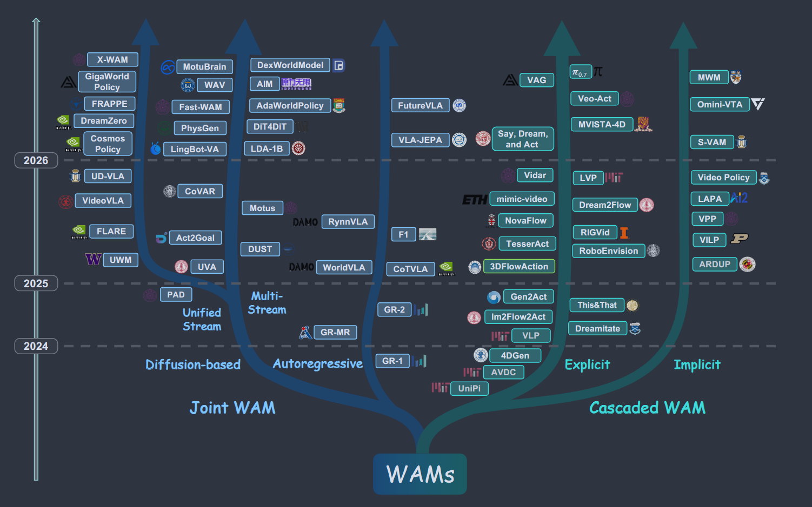
DEFINITION:
We consider an embodied agent interacting with an environment. At each timestep, the agent receives an observation o ∈ O (encompassing visual inputs, proprioceptive signals, and any other sensory modalities), a language instruction l ∈ L, and produces actions a ∈ A. We use o′ to denote the observation at the subsequent timestep.
VAM - video prediction + action generation
Video Policies - structural heritage - use generative video architectures to extract spatiotemporal representations
World Models
1.Action-conditioned World Models - environment’s evolution to agent’s actions
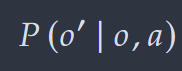
·Explicit Pixel-level Prediction - ACVP, CDNA, Deep Visual Foresight, SV2P, MCnet, ContextVP
a. Autoregressive video world models - an important paradigm of generative world models - iVideoGPT, Genie(latent action model to infer action variables from unlabeled video clips)
b. Diffusion-based video world models - explicitly modeling the distribution over possible future observations, learning the conditional distribution over future trajectories and capture multimodal environment dynamics - Diffusion World Model
·Implicit Latent-space Dynamics Model - Dynamics in a compact latent space
Recurrent State-Space Model(RSSM) - PlaNet, Plan2Explore, Dreamer
Transformer State-Space Model - TransDreamer
Predictive Representation Learning - “modeling latent embeddings of missing or future observations” (Wang 等, 2026, p. 9)
JEPA, MC-JEPA， V-JEPA 2, LeWorldModel, A-JEPA
2. Language-conditioned World Models
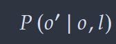
Early: GAN-based : MoCoGAN, TGAN, DVD-GAN
Diffusion-based : U-Net
Transformer: ViT - Sora Latte
VAEs - VideoGPT
DiT + Flow Matching - OpenAI, Kling 3, Veo 3
3. Embodied World Model
Enabling world models to acquire physics dynamics from human operation videos - Genie (latent action model), SWIM (for manipulation), DreamDojo (continuous latent actions), DexWM (Extracts 3D hand keypoints from egocentric videos)
Enhance quality of robotic demonstrations - RoboDreamer (inherent compositionality of natural language), IRASim (frame-level action conditioning module, action vector into spatial attention layer), MiLA (coarse-to-fine strategy, joint denoising correction flows + temporallly progressive denoising schedule), Ctrl-World (concatenate images from multiple cameras along token dimension within a spatial transformer), RoboScape (adaptive keypoint dynamics learning + dual-branch co-autoregressive transformer for coordinated generation of RGB and depths streams), WoW
Broaden the capabilities of world models - VT-WM, PointWorld
World Model for VLA
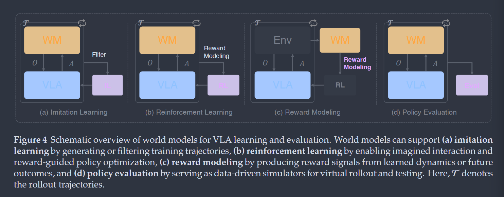
1.World model for learning
a. Imitation Learning : Generate diverse training data - DREMA (A compositional manipulation world model by combining object-centric Gaussian Splatting with a physics simulator, Ctrl-World, RoboScape
b. Reinforcement Learning : supporting safe and scalable policy learning, facilitating implicit reward estimation, improving robustness of sim-to-real transfer, policy learning
-World model as surrogate environments - Dreamer
-World model for reward modeling - VIPER (Pretrained video prediction models to evaluate the compatibility between observed trajectories and the learned dynamics of successful behaviors -> action free reward), GenReward, SRPO, RoboScape-R
2. World Model for Evaluation - Ctrl-World, Veo Robotics, Interactive World Simulator
Architecture
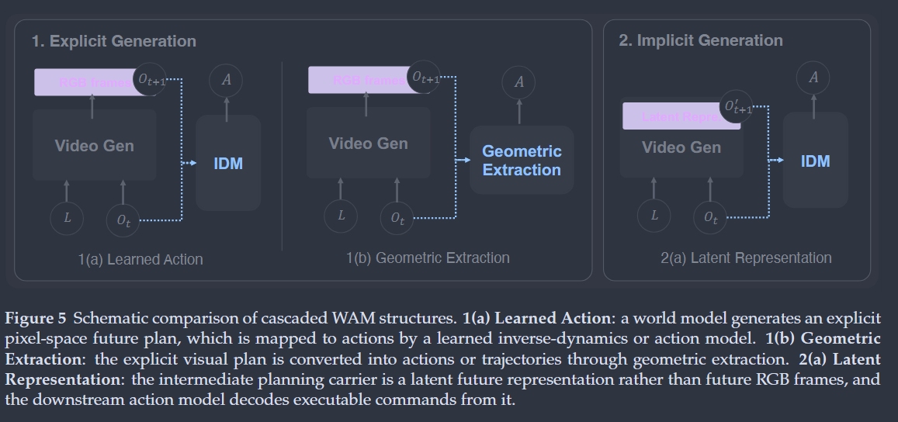
Cascaded World-Action-Model
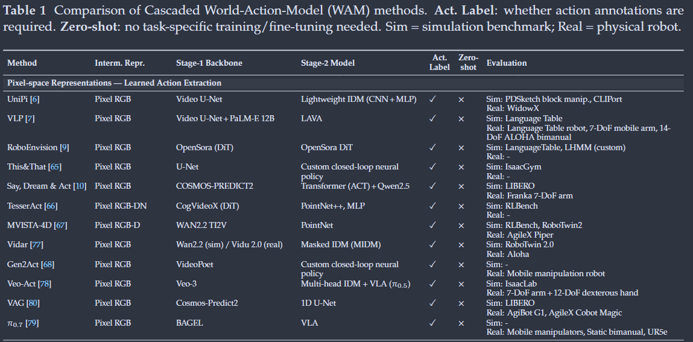
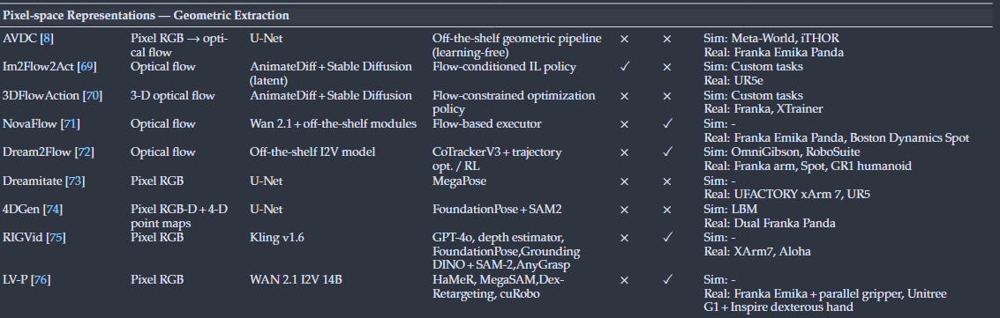
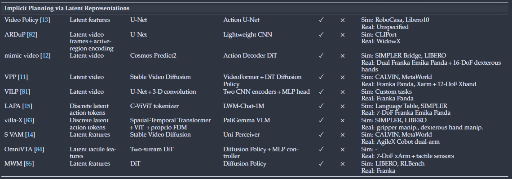
a. explicit planning via pixel-space representation
Learned Action Extraction - UniPi (text-conditioned spatiotemporal U-Net diffusion model)y, VLP (semantic-level intervention, equip pipeline with a VLM for hierarchical sub-action generation and tree-search-based value scoring), RoboEnvision
ThisThat, Say Dream Act (adversarial distillation to reduce denoising steps)
representation : TesserAct (depth + surface normal channels), MVISTA-4D (two-step mechanism - trajectory-level latent optimization + residual IDM refinement)
across embodiment types : Vidar, Gen2Act, Veo-Act
rather than IDM: VAG (1D U-Net as action encoder), pi0.7 (Replace second stage IDM with pretrained VLA)
Geometric Action Extraction - Replace the learned IDM with geometric computation over structured intermediate representations
AVDC (Optical Flow), Im2Flow2Act, 3DFlowAction, NovaFlow, Dream2FLow(Zero training), Dreamotate (pose tracking by MegaPose), 4DGen, RIGVid
b. Implicit Planning via Latent Representations
VPP (VAE to encode observation frames, diffusion model to single-step predict future latent sequences, a lightweight policy network conditions on these latents to produce actions), VILP (multi-view latent planning), S-VAM (directly addresses the generation quality cost)
Video Policy - ARDuP, mimic-video, MWM
“after fine-tuning SVD for video prediction, all video U-Net weights are frozen and a separate action U-Net is trained to generate action sequences conditioned on intermediate features from the video decoder, establishing feature-level conditioning as an alternative to pixel or flow inputs” (Wang 等, 2026, p. 17)2
OmniVTA - implicit latent planning for visuo-tactile domain, LAPA
2. Joint World-Action-Model
1.autoregressive generation - early hallucinations cascade into subsequent action failures
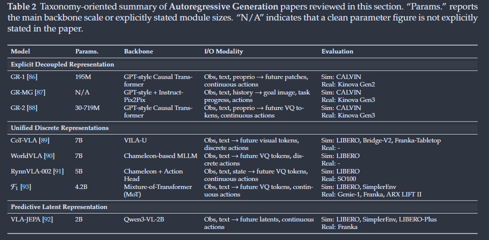
a.Explicit Decoupled Representation - GR-1, GR-MG, GR-2
b.Unified Discrete Representation - “physical dynamics and visual states are represented as unified discrete symbols, generated by the exact same next-token prediction head” (Wang 等, 2026, p. 19)
c.Predictive Latent Representations - bypass pixel-level shortcuts - VLA-JEPA - prioritize semantic abstraction and robustness
2. Diffusion-based Generation
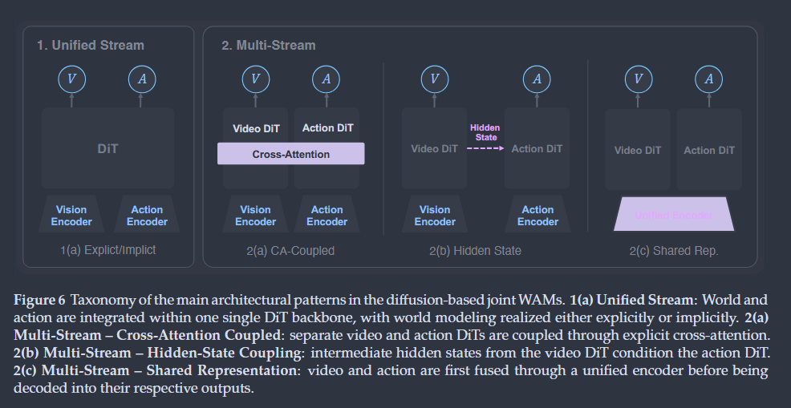
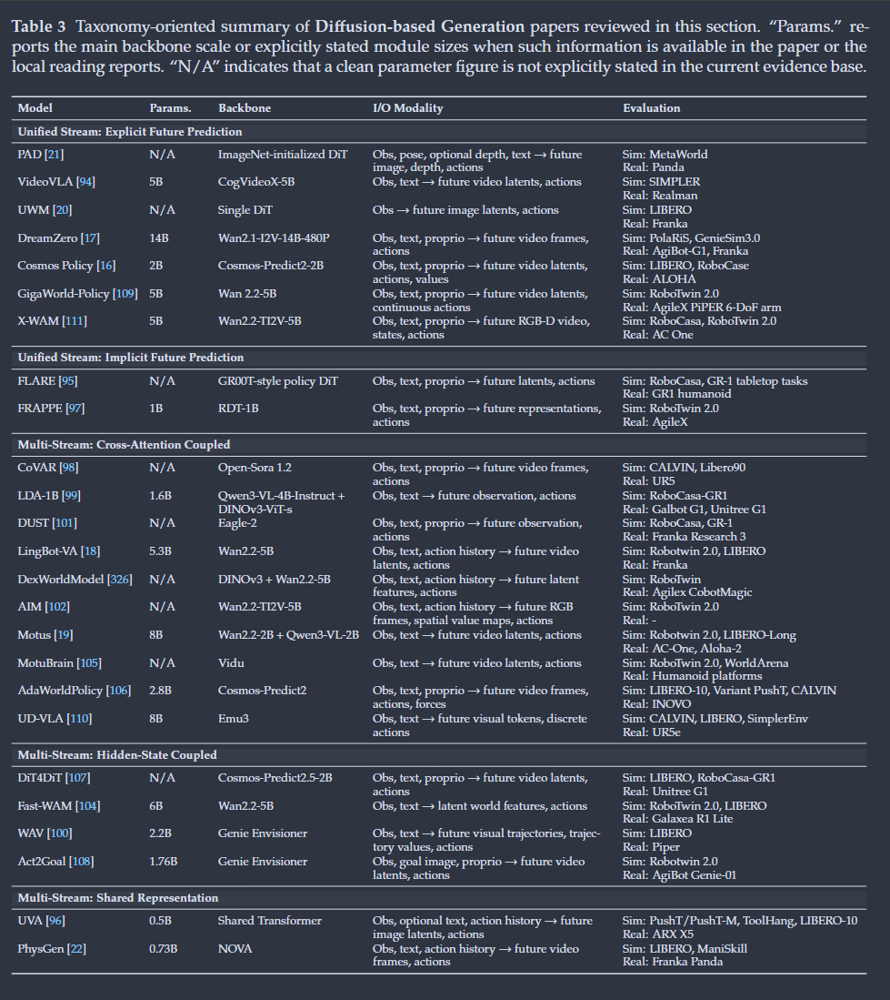
Unified Stream - parallel generation of world action variables absorbed into a unified backbone
Explicit Future Prediction - PAD, VideoVLA, UWM, Cosmos-Predict2, DreamZero (pretrained Wan2.1 + lightweight additions, state/action encoders and an action decoder + denoising video latents and action latents), GigaWorld-Policy, X-WAM
Implicit Future Prediction - FLARE, FRAPPE
Multi-Stream
a. Cross-attention Coupling - Video DiT + Action DiT + Cross-attention - CoVAR, LDA-1B, Lingbot-VA, DexWorldModel, AIM, Being-H0.7
b. Hidden-state Coupling, DiT4DiT, Fast-WAM, WAV, Act2Goal
c. Shared Representation / Unified Encoder - UVA, PhysGen
Training data
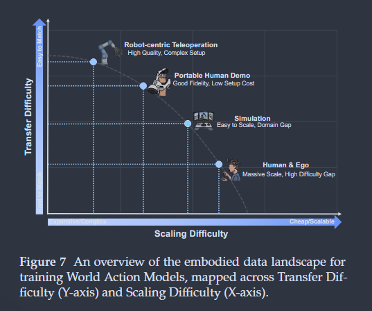
1.Robot-centric Teleopration
Scaling
QT-Opt, MT-Opt, RoboNet, MIME
BridgeData, BC-Z. RT-1, Language-Table, RH20T-P
OXE, ARIO, RoboMIND, DROID, UnifoLM-WBT, Jaco Play
Multimodal and Contact-Rich Grounding
Berkeley UR5, OmniAction (Audio)
TOTO, Cable Routing Dataset, REASSEMBLE
2.Portable Human Demo (UMI style) - handheld 3d-printed gripper, wearable cameras, FastUMI
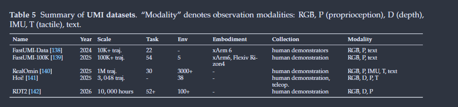
3.Simulation - for physics engines -
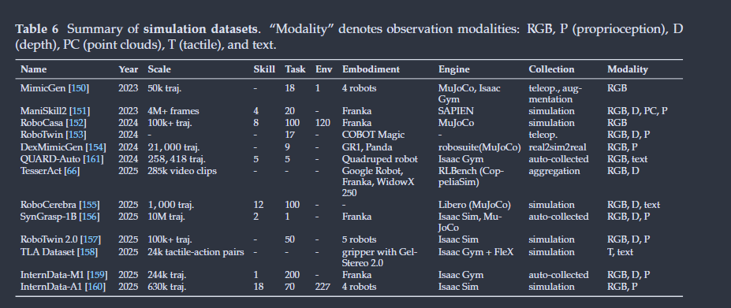
Tactile : The TLA Dataset
Sim 2 real: synGrasp-1B, RoboTwin2.0
4. Human & Ego
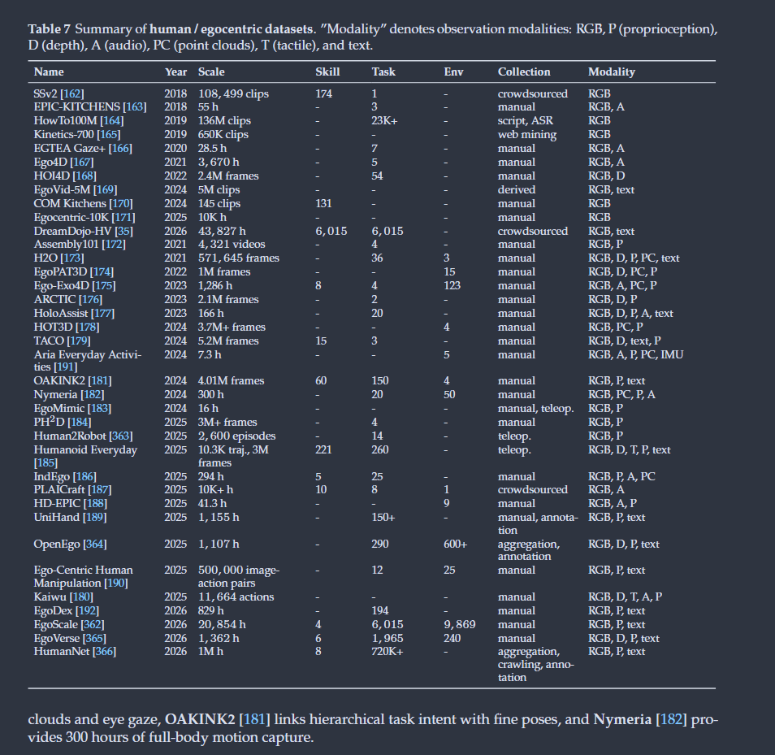
Passive World Modeling: Action Semantics and Visual Dynamics - Short horizon interactions
Bridging the Action Gap
Towards Generalist Pretraining Mixtures
Evaluation - fidelity of future states and effectiveness of generated actions
1.World Modeling Capability
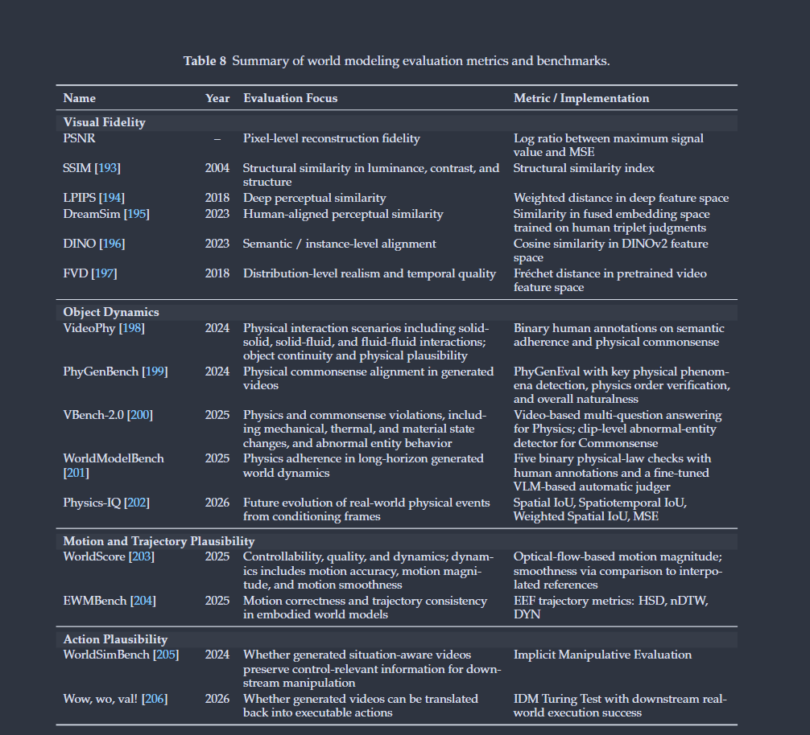
a. Visual Fidelity - PSNR, SSIM
feature-based - LPIPS, DreamSim, DINO, FVD
b. Physical Commonsense
Object Dynamics
Motion and Trajectory Plausibility - World Score, EWMBench
c. Action Plausibility - WorldSimBench, Wow, wo, val
2. Action Policy
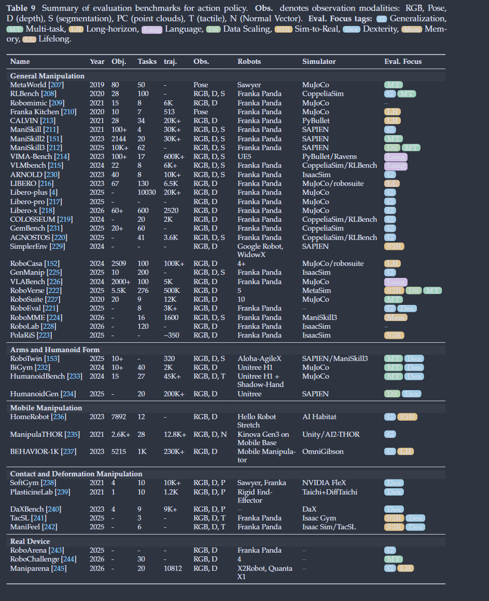
a.General Manipulation - RLBench, MetaWorld, Robomimic, LIBERO, ManiSkill series, RoboCasa, COLOSSEUM, LIBEROplus, GemBench
b.Bimanual and Humanoid Manipulation - RoboTwin, Humanoid Bench
c. Mobile Manipulation - ManipulaTHOR
d.Contact-rich and Deformable Object Manipulation
Tactile - TacSL, ManiFeel
e.Real-robot Evaluation - RoboArena. RoboChallenge, Maniparena
Tips: What aspects did you question, how do you think it can be improved?
Tips: What was done, what problem was solved, innovations and shortcomings?